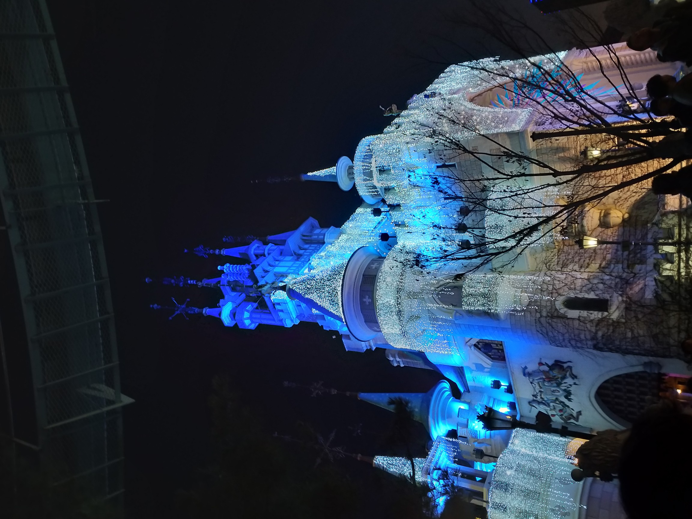
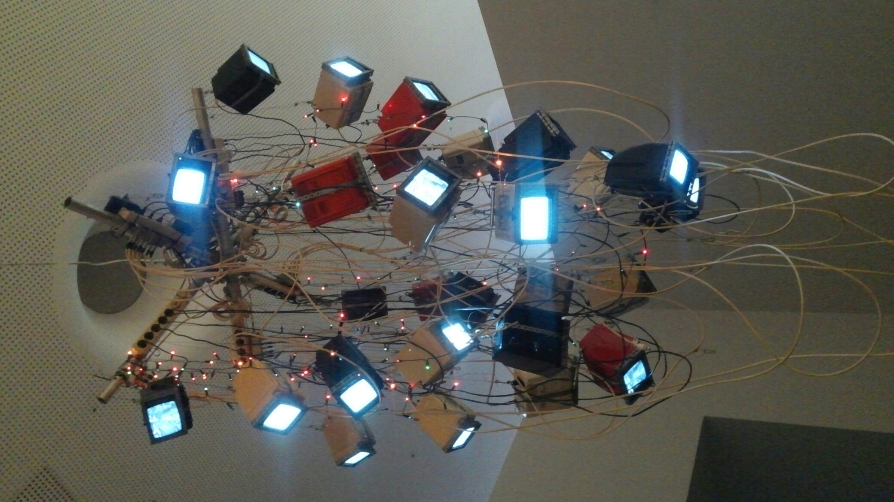
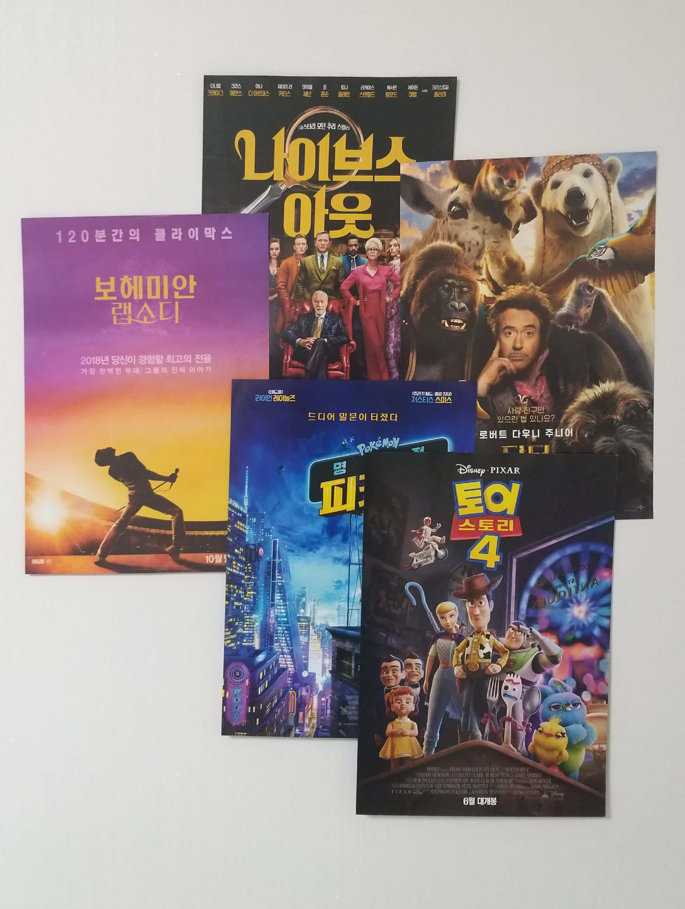

<-Back to Home
좋아하는 것

-
놀이동산
- 2019년 겨울, 친구와 함께 갔던 롯데월드
- 롤러코스터를 좋아해서 코로나 이전엔 친구들과 자주 놀러갔다.

- 전시회
- 친구의 제안으로 함께 갔던 전시회의 사진.
- 이 전시회를 다녀온 이후로 전시회를 좋아하게 되어서
전시회 관람 취미가 생겼다.

- 영화
- 코로나 이전에는 예매도 안 하고, 어떤 사전정보도 없이
무작정 영화관으로 가서 제목만으로 영화를 고르는 취미가
있었을 정도로 영화를 좋아했다.
- 제목만으로 영화를 골라서 보는 것이 취미인 만큼 특별히 싫어하는 장르는 없다.
요즘은 뮤지컬 영화를 가장 좋아한다.
★★★무슨 영화를 좋아하는지 궁금하다면 포스터 사진 을 클릭!★★★
[TOP]